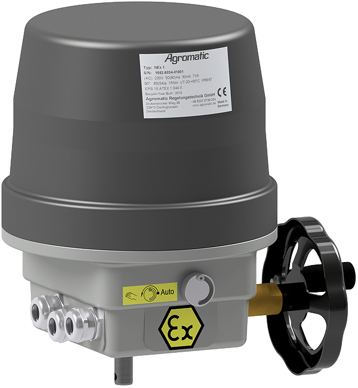
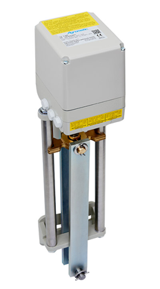
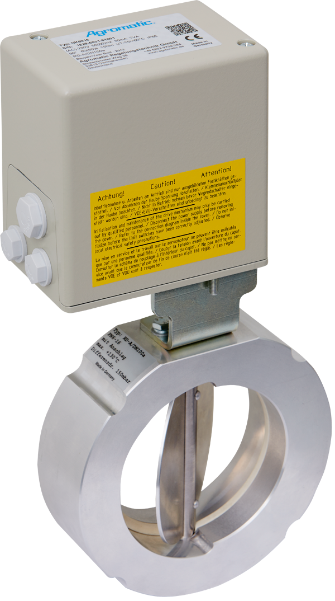

Agromatic develops and manufactures robust actuators for moving, positioning and controlling valves and industrial equipment — precisely engineered, durable and tailored to the application.
Special solutions for vibration-intensive environments such as centrifuges, railway applications and mechanically demanding plants — including customized functions such as electromagnetic gear disengagement or interfaces for customer control systems.
 Linear actuator on valve with gear disengagement and handwheel
Linear actuator on valve with gear disengagement and handwheel
Part-turn actuator with clamp lever coupling Zone 2 and 22 actuator with high torque
Zone 2 and 22 actuator with high torque Ex Zone 1 rotary actuator
Ex Zone 1 rotary actuator
Ex Zone 1 linear actuator
NK actuatorAgromatic stands for electric actuators used where standard solutions are often not enough. With in-house manufacturing in Oerlinghausen, decades of experience and strong ATEX expertise, we create actuators that fit the plant technically and reliably.
Designed for continuous function, high mechanical loads and precise positioning in industrial environments.
From adapted gear units to customer-specific interfaces, we build solutions that fit real installation conditions.
Short communication paths, in-house development and vertical manufacturing depth enable fast decisions and clean implementation.
Our product ranges provide a quick entry point — from rotary and part-turn movement to linear applications, explosion-protected versions and custom solutions.
For precise positioning, valves and high torques in industrial applications.
Robust solutions for linear movements, even under demanding operating conditions.
Actuators for potentially explosive atmospheres and safety-critical process environments.
Individually developed actuator systems matched to application, installation space and control concept.
Position feedback, 4–20 mA setpoint/actual value, Modbus or IO-Link — for integration into PLC and process control systems.
A cross-product modular system for control, feedback, communication and mechanical adaptation.
Talk to us. We support you in selecting the right solution and advise you on technical requirements, applications and project-specific details.
Stukenbrocker Weg 38
33813 Oerlinghausen
Phone: +49 5202 9739 0
Email: info@agromatic.de
Tell us briefly about your application, actuator type and special requirements. This helps us support you quickly and precisely.